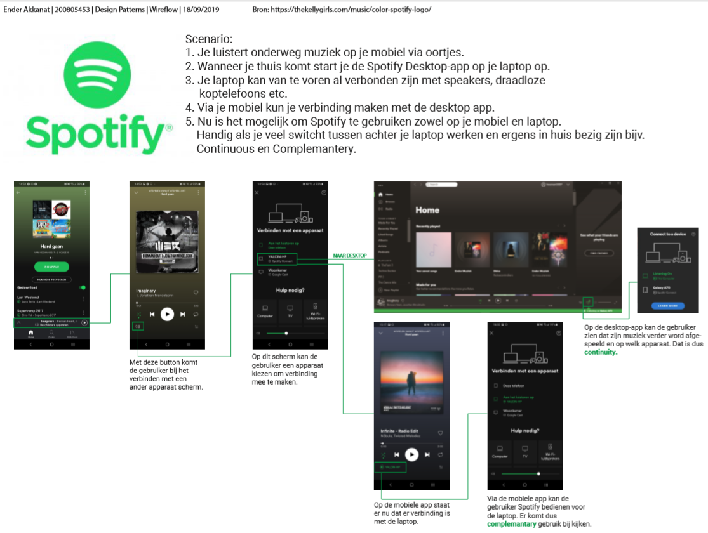

Eerst heb ik onderzoek gedaan naar Spotify omdat dit een applicatie is die je op verschillende devices samen of apart kan gebruiken.
Bij het eerste deel van de opdracht heb ik een Screen Flow gemaakt om een stap vooor stap overzicht te maken hoe je Spotify op meerdere apparaten kan gebruiken.
Daarna moest ik een interactie bedenken die aansluit bij een Job-Story van Project Web, de interactieve reisgids. Het doel was om iets op een willekeurige manier te laten zien.
Ik heb onderzocht welke interacties er al bestonden om iets willekeurigs te laten zien. Daarna ben ik zelf gaan ontwerpen.
Tenslotte heb ik een Wire-flow gemaakt met alle interacties voor mijn prototype van Project Web.
Terug